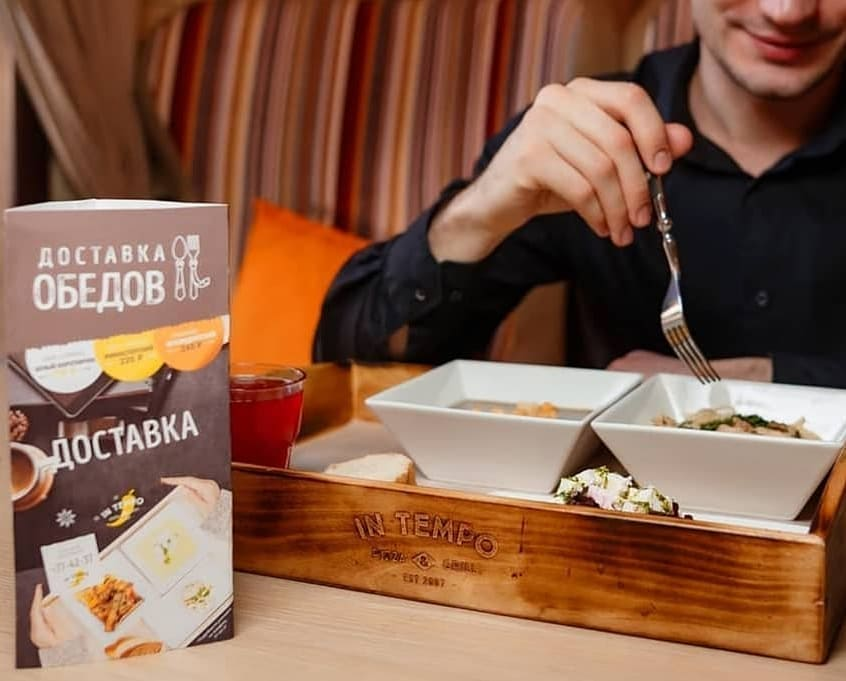

Pizza podľa @intempopizzagrill — Normy Jedál
Середина рабочего 🕑 дня и второго весеннего 🌿 месяца позади!
Это было быстро!
Но не настолько быстро, как Вам принесут фирменный бизнес-ланч ⏳ ресторанного уровня от @intempopizzagrill. Ведь в ресторане изысканной итальянской 🇮🇹 кухни "IN TEMPO" мы ценим время каждого гостя, именно поэтому приносим бизнес-ланч в течение 5 минут и не минутой позже!
Предлагаем Вам заглянуть в наше уютное заведение и убедиться в этом лично 😉
Ждем вас по будням:
🗓 ПН-ПТ
🕓12:00-16:00
А также с радостью напоминаем, что бизнес-ланч от @intempopizzagrill можно заказать доставкой прямо в офис 🏢
Оформить заказ можно в группе VIBER по телефону 📞 79877705321
‼️Актуальное меню бизнес-ланчей в stories и группе в VIBER ‼️
ЖДЁМ ВАС В ИТАЛЬЯНСКОМ СЕРДЦЕ ГОРОДА🌿
📍г. Оренбург, ул. Советская 49
📞 77-42-37
💻 Pizzandgrill.ru
#intempo #pizza #grill #delivery #orenburg